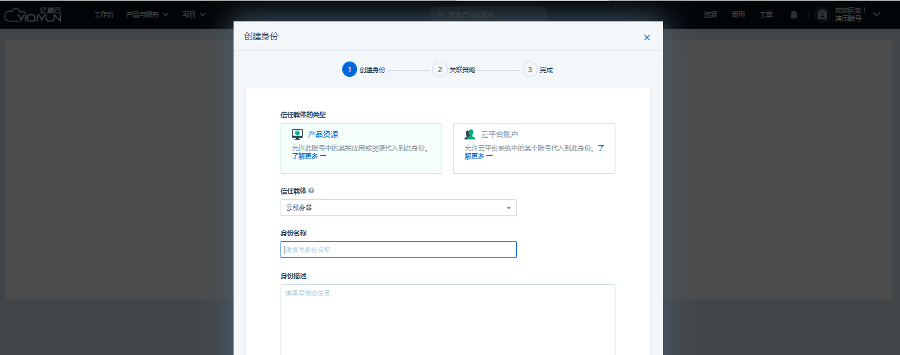

身份管理
为了控制可以接入云平台访问客户资源的实体，您可以通过创建 IAM 身份向应用程序或他人来委派您名下服务和资源的访问权限。
当您创建身份后，即表示该身份的指定实体与本账户之间建立了信任关系，该实体（即身份的信任载体）可通过代入此身份而获得本账户的一个临时访问凭证。
创建身份
选择左侧 身份管理 菜单，点击 创建，根据页面指引创建身份并绑定策略。

-
为身份指定信任载体，信任载体详细定义参见：信任载体。
您可以选择产品资源或账户类型来创建身份，点击 了解更多 以查看该载体类型的描述和适用场景介绍。
说明
当您为身份指定产品资源类的信任载体时，您可以在下拉框中选择指定具体的产品资源；而当您为身份指定账户类的信任载体时，则需要对方实现将其账户 ID 提供给您。若您为自己名下的子账户创建身份，可以直接输入子账户名称实时搜索：
-
选择好将要赋予身份的“信任载体”类型后，填写身份名称和描述，点击 创建身份 按钮即可成功创建身份，页面将自动引导进入关联策略的步骤。
点击左上角的 系统预置 和 自定义 标签进行策略切换，当列表中的策略比较多时可以通过搜索框筛选定位。
勾选 ID 前面的复选框后点击 关联策略 按钮即可完成策略关联的操作。如果暂时不需要关联策略，也可以选择点击 跳过。
-
关联策略或跳过关联策略后，界面都将指引进入完成步骤。提示您身份创建成功，并显示该身份的一些基本信息和其关联的策略。
创建成功后，您可以直接从当前审阅窗口点击到策略模拟器验证该身份的权限配置，或转到该身份详情页查看和管理。
创建子账户同时创建身份
为了更方便地使用子账户身份功能，我们还可以在创建子账户时顺便为该子账号创建身份。
-
登录控制台后，点击账户头像下方的 子账户 进入子账户管理面板，点击创建一个子账户。
创建成功后将弹出如下提示，点击 了解更多。
若您的子账户列表中已存在子账户，也可在列表上右键单击，选择 添加 IAM 身份。
-
阅读弹窗上的引导内容后，点击 创建身份 按钮。
-
输入身份名称和描述后确定即可为当前子账户成功创建身份。
-
接下来跟前述常规创建身份时一样，可直接附加策略或放弃附加策略。
为身份附加（/移除）策略
只有为身份附加了策略之后该身份才能获得策略定义的一系列权限，因而在前文创建身份的步骤中，IAM 指引客户直接进入到了关联策略的步骤以平滑完成整个流程。
如果一旦您没有在创建时关联或者在创建完后有附加新权限集合的需要，IAM 依然提供再次为该身份添加和移除策略的操作，并支持一次性添加或移除多条策略。在身份列表页和身份详情页都可以操作。
-
身份列表页找到对应的身份，鼠标右键点击可看到功能入口。如下图所示：
也可在身份详情页下方切换到关联策略选项卡后看到操作按钮：
-
点击 附加策略，即可看到与前文创建身份时描述一样的弹窗。相应的，移除策略时支持复选框同时勾选多条后操作：
查看和修改身份
身份列表页单击任一身份行即可进入该身份详情页查看，详情页将详细展示身份的信任载体及关联的策略信息。
修改身份属性
IAM 身份的凭证是具备有效期的，表示代入该身份的会话最长可以使用的时间，过期了需要重新获取凭证。
创建身份时，系统会根据信任载体类型不同而设置不同的默认有效期，身份创建成功后可随时修改。
说明
目前资源类身份会话有效期默认为 1 小时，账户类身份会话有效期默认为 6 小时。
修改身份会话有效期将与身份名称描述等属性的修改入口相同。
-
身份列表页，找到要修改的身份双击鼠标左键：
-
也可以鼠标右键单击对应的身份，选择 修改：
-
或者进入身份详情页，点击右上角按钮选择 修改：
在弹出的窗口上方可修改身份名称和描述，最后同时提供该身份的会话有效期，三条属性修改确认无误即可点击修改并提交。
为资源类身份添加信任载体
身份创建时指定了载体类型，如果该载体类型是产品资源，还需要将具体资源绑定到身份上才可以使该资源能通过 SDK 的方式代入身份。
例如，下图是当身份载体类型为“云服务器”时，为身份添加具体云服务器资源的页面，为集群时亦同。
为信任载体资源更换身份
当身份载体类型为云服务器（或集群）时，已绑定该身份的信任载体云服务器（或集群）详情页也会展示该身份的基本信息。例如：
-
您可以点击关联资源列表的云服务器 id 直接进入到该云服务器详情页，可以看到身份信息卡片。点击 更换关联身份。
-
弹出窗口将提示您可以更换到的身份，阅读这些身份属性选择您需要的身份点击 更换。
-
身份更换成功之后您可以在此查看到新的身份详情。
为账户类身份配置可见模块
为了让赋予身份权限的对方账户更聚焦操作，IAM 将其可操作权限设定了双重保险：默认为对方切换身份后的账户控制台设置了 URL 可见模块，只有开通的模块才可通过 UI 控制台操作。
-
进入账户类身份详情，即可在下方“信任载体详情”选项卡看到相应模块配置。如下图所示：
-
您可以随时根据需要增加或删除相应可见模块：
说明
浅蓝色为默认初始开放模块，全蓝色为新增开放模块，移除的模块为红色。
-
切换到所有模块，可查看到控制台所有服务模块，包括 IAM 尚未支持管理的部分。
-
调整后点击“立即生效”按钮，可汇总显示此次的所有变动。确认后模块管理将立即在对方账户使用该身份访问控制台页面时生效。点击查看：如何使用身份？
说明
如果您没有将任何可用区设为可见，对方将无法查看除“账户管理”类别外的任意模块。
当您找不到您需要开放或关闭的模块时，可以使用搜索或者过滤功能来查找。
使用身份
当 IAM 身份创建成功后，您可以通过下载官方 SDK来更新您应用中的认证代码来调用身份，账户类身份也可以通过登陆控制台 UI 面板执行“切换身份”操作。
更多操作详情及注意事项，请参见：如何代入身份使用？
测试身份拥有的权限
当身份附加策略后，您可以使用策略模拟器来验证多个合并的策略组合附加到身份是否符合预期，从而辅助您确认身份和权限配置。
具体操作步骤请参见：身份上的策略权限验证。
删除身份
说明
删除身份时将同时解除该身份已关联的策略以及授权关系，请注意谨慎操作。
- 身份列表页选择您确认删除的身份，在更多操作中点击 删除，在弹出的确认窗口阅读提示信息确认后，即可批量删除多条身份。
也可以在身份列表上鼠标右键单击对应身份选择 删除 来删除这一条身份。
或进入身份详情页在“基本信息”卡片右上角点击后选择 删除。
-
阅读并确认弹框提示信息后即可删除。